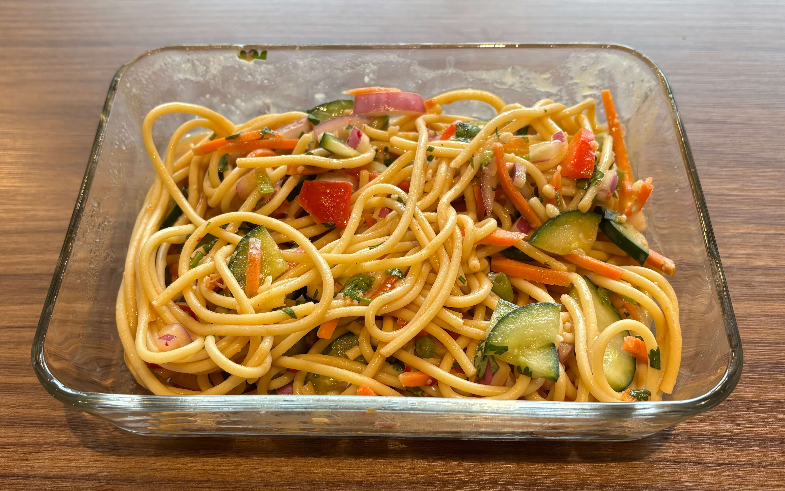

Home
Cold Thai Noodle Salad

6 servings
Prep time:10 min, cook time:14 min
Ingredients
- 0.5 cup Soy Sauce
- 0.5 cup Sweet Chili Sauce
- 6 Tbsp Sesame Oil
- 4 Tbsp Peanut Butter
- 4 Tbsp Seasoned Rice Wine Vinegar
- 2 Tbsp Crispy Chili Oil
- 8 cloves Garlic minced
- 2 large Lime juiced
- 1 lb linguine
- 1 medium Red Bell Pepper finely chopped
- 1 cup Shredded Carrots finely chopped
- 1 bunch Cilantro finely chopped
- ½ cup Green Onion finely chopped
- ½ medium Red Onion finely chopped
- 1/2 cucumber finely chopped
Steps
- Begin by preparing your noodles al dente according to the directions on the box.
- When noodles are done, strain and rinse them with cold water.
- Meanwhile, whisk together soy sauce, sweet chili sauce, sesame oil, peanut butter, rice wine vinegar, hot chili oil, garlic, and lime juice until it's smooth and creamy. Season to taste.
- Add cooked noodles to a large bowl and top with diced red pepper, carrots, cilantro, green onions, and red onion.
- Pour the sauce on top and toss everything together until each noodle is coated. Serve immediately or store in the refrigerator in an airtight container for 3-4 days.